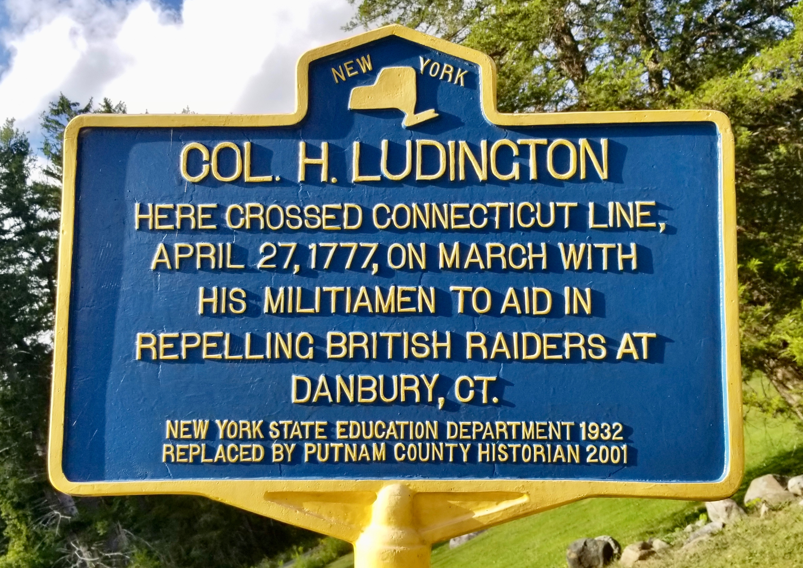

Col. H. Ludington
The point where a Dutchess County militia regiment crossed into Connecticut on the morning of April 27, 1777, marching to oppose the British raid on Danbury.

COL. H. LUDINGTON
Here crossed Connecticut line,
April 27, 1777, on march with
his militiamen to aid in
repelling British raiders at
Danbury, Ct.
About this Marker
Henry Ludington (May 25, 1738 – January 24, 1817) was a French and Indian War veteran who in 1760 moved with his new wife Abigail from Branford, Connecticut, into the wilderness of the Philipse Patent — the territory that would later become the Town of Kent in Putnam County. They were among the earliest settlers in what was then called the Fredericksburgh Precinct of Dutchess County, raising twelve children on a 229-acre farm and prospering by hard work in a region of, in one early observer’s words, “rocky and rugged hills.” Ludington had enlisted in the Connecticut Provincial Forces at the age of seventeen, served in three campaigns of the French and Indian War, and was present at the Battle of Lake George, where he watched his uncle killed and a cousin mortally wounded. He took part in the British capture of Quebec in September 1759 before returning to Connecticut and the civilian life that brought him to Putnam County.
By the eve of the Revolution Ludington held a captain’s commission in the Frederickburg Regiment of Dutchess County Militia, granted in 1773 by the royal governor William Tryon. When word of Lexington and Concord reached the Hudson Valley in April 1775, Ludington broke with his oath of fealty to the Crown and took the Patriot side. He was promoted to major, then lieutenant colonel, and in June 1776 was commissioned colonel by the Provincial Congress of New York, commanding the regiment that drew its men from the Fredericksburgh and Philipse Precincts of Dutchess County. His command lay on the most direct overland route between the Continental fortifications at West Point and the supply depots and gathering places of western Connecticut — a position both strategically important and dangerous, since the territory was riven by Loyalist sympathy and constant raids by the irregular bands of “Cowboys and Skinners” who infested the Neutral Ground.
The Danbury Raid
In late April 1777 the British command in New York launched an expedition under Major General William Tryon — the same Tryon who had given Ludington his royal captain’s commission four years earlier — against the Continental supply depot at Danbury, Connecticut, where the Americans had concentrated stores of provisions, tents, shoes, and ordnance for the coming summer’s campaign. Some two thousand British and Loyalist troops landed at Compo Beach near Westport on the afternoon of April 25, marched inland through Bethel, and reached Danbury on the evening of April 26. The small Continental guard, badly outnumbered, withdrew; Tryon’s men set fire to the supply stores, then to a portion of the town itself, while Patriot militia and Continental detachments raced toward Danbury from every direction.
A messenger reached Colonel Ludington at his Fredericksburgh farm on the evening of the 26th, summoning his regiment to march. Ludington’s men — farmers, scattered across miles of remote township — were not in any kind of standing muster: someone, in the dark, had to ride from farm to farm and call them up. By daybreak the regiment had assembled, taken up the line of march, and was moving east. The DeForest Corners marker (a half mile northwest of this one along the old road) records the point where Ludington’s column turned east toward the state line. This marker, near the present New York–Connecticut border, records where they crossed into Connecticut and entered the operational theater of the raid.
The regiment was too late to save Danbury. By the time Ludington’s militiamen and the other converging detachments could pull together a coherent force, Tryon’s column had already begun its return march. On April 27 at Ridgefield, Continental troops under Brig. Gen. David Wooster, Brig. Gen. Benedict Arnold, and Brig. Gen. Gold Selleck Silliman harassed the British retreat at the engagement that is now remembered as the Battle of Ridgefield. Wooster was mortally wounded that day and died on May 2. Tryon’s force pushed through and re-embarked at Compo Beach on April 28, having lost on the order of two hundred killed, wounded, and captured. The Americans had lost the depot but had imposed real cost on the raiders. Ludington’s regiment was one of the Dutchess County contingents that made that pursuit possible.
The spy ring
Beyond his service in the field, Ludington was deeply embedded in what an early biographer called “the first secret service” of the American Revolution. He worked with John Jay and with the military intelligence officer Nathaniel Sackett to organize a network of Patriot informants gathering information on British movements out of New York City through Dutchess and Westchester Counties. He sheltered and dispatched spies from his own regiment and from his own house. The most famous of his collaborators was Enoch Crosby, a shoemaker by trade whose travels among the country’s farms gave him cover to collect intelligence on Loyalist mustering — the same Enoch Crosby whom James Fenimore Cooper would later use as the model for Harvey Birch in his 1821 novel The Spy. Cooper’s portrait of the war in the Neutral Ground draws on this same territory; Ludington and Crosby were among the actual men who did the dangerous, irregular work the novel fictionalized.
Ludington’s prominence in this work made him a target. According to family tradition, the British placed a price on his capture and a Loyalist named Prosser came at night to take him; the attempt failed when sentries saw the approach and Ludington’s daughters lit candles in every room of the house, marching and counter-marching past the windows to suggest a strong garrison. (This account is preserved in the 1907 family memoir and is not independently corroborated by 1777 records, but it is consistent with the pattern of irregular threats to Patriot officers in the region.) After the war Ludington served four terms in the New York State Legislature, built and operated a grist mill that gave its name to the hamlet of Ludingtonville in Kent, and died at the age of seventy-eight in 1817. He is buried in the Presbyterian churchyard at Patterson.
A note on the Sybil Ludington ride
Many readers will arrive at this marker expecting to find a different story — the story of Sybil Ludington (1761–1839), the colonel’s teenage daughter, who is widely said to have ridden some forty miles through the night of April 26, 1777 to summon her father’s scattered militiamen for the very march this marker commemorates. That story is celebrated by an Anna Hyatt Huntington statue at Carmel (dedicated 1961), a 1975 U.S. Postal Service Bicentennial stamp in the “Contributors to the Cause” series, and any number of children’s books and roadside memorials along its claimed route. Neither of the two markers commemorating the march itself names her.
The honest position is that the Sybil ride may have happened, but it has substantially weaker documentation than the popular telling suggests. No contemporary 1777 source records it. Sybil Ludington herself, who lived until 1839, never mentioned it in writing that survives. The story first surfaced in print in Louis S. Patrick’s 1907 article in The Connecticut Magazine — Patrick was a great-grandson of Henry Ludington — and was repeated, in less colorful form, in Willis Fletcher Johnson’s memoir Colonel Henry Ludington, also 1907, commissioned by Ludington’s grandchildren. The most thorough modern study, Paula D. Hunt’s 2015 article in The New England Quarterly (“Sybil Ludington, the Female Paul Revere: The Making of a Revolutionary War Heroine”), concludes that the ride as popularly told is a 20th-century construction built on family tradition, embellished in retelling, and not securely anchored in 18th-century evidence. Skepticism, Hunt notes, dates back at least to 1956. Coverage in Smithsonian Magazine, the New York Times, and elsewhere has since brought the debate to a wider audience.
What is securely documented is what these two markers commemorate: that on the night of April 26–27, 1777, by some means, Colonel Ludington’s scattered regiment was summoned, mustered, and put in motion; that on the morning of the 27th the column turned east at DeForest Corners and crossed the Connecticut line at this spot; and that the regiment marched toward Danbury to oppose Tryon’s raid. The colonel and his militiamen are the subjects of these markers. The ride that may or may not have summoned them is a separate story, and its evidence is what it is.
The marker
The original marker at this site was erected in 1932 by the New York State Education Department, as part of the state’s ambitious roadside-marker program that placed thousands of the familiar blue-and-yellow signs across New York. The current marker was replaced in 2001 by the Putnam County Historian, preserving the original 1932 wording. The matching marker at DeForest Corners, half a mile to the northwest, was produced and replaced in the same years — the two markers belong to a single 1932 program documenting the route of the militia’s march.
Town of Patterson, NY
(41.440467°, −73.536750°)
Sources
- On-site photograph of the New York State Education Department marker (1932 original, replaced in 2001 form by the Putnam County Historian).
- Willis Fletcher Johnson, Colonel Henry Ludington: A Memoir (New York: privately printed by his grandchildren Lavinia Elizabeth Ludington and Charles Henry Ludington, 1907) — primary source for Ludington’s biography, French and Indian War service, settlement in the Philipse Patent, militia commissions, command at the Danbury alarm, spy-ring work with Sackett and Jay, and the family geography. Johnson explicitly notes in his preface that “no portrait of Henry Ludington is in existence” — the reason this page carries no portrait. Full text via Project Gutenberg.
- Louis S. Patrick, “Secret Service of the American Revolution,” The Connecticut Magazine, 1907 (reprinted by the Connecticut Society SAR) — the original print source of the modern Sybil Ludington ride narrative; also a detailed account of Ludington’s spy-ring activities, the Prosser raid, and the Tarrytown skirmish with Clinton.
- Paula D. Hunt, “Sybil Ludington, the Female Paul Revere: The Making of a Revolutionary War Heroine,” The New England Quarterly 88, no. 2 (June 2015): 187–222 — the leading scholarly treatment of the historiography of the Sybil Ludington ride.
- Henry Ludington, Sybil Ludington, and Danbury Raid — Wikipedia articles, consolidating standard sources including Patrick 1907, Johnson 1907, Pelletreau’s History of Putnam County (1886), Beers’s Commemorative Biographical Record (1897), De Forest’s Ludington-Saltus Records (1926), Hunt 2015, and modern coverage in Smithsonian (Eschner 2017, Tucker 2022) and the New York Times (Pollak 1995).
- Connecticut Sons of the American Revolution, “Secret Service of the American Revolution” (reprint of Patrick 1907).
- Ludington Family Papers, MS 2962, New-York Historical Society — the manuscript collection of Ludington family papers (1740–1969); not consulted directly for this page but noted as the primary archival source for further research.